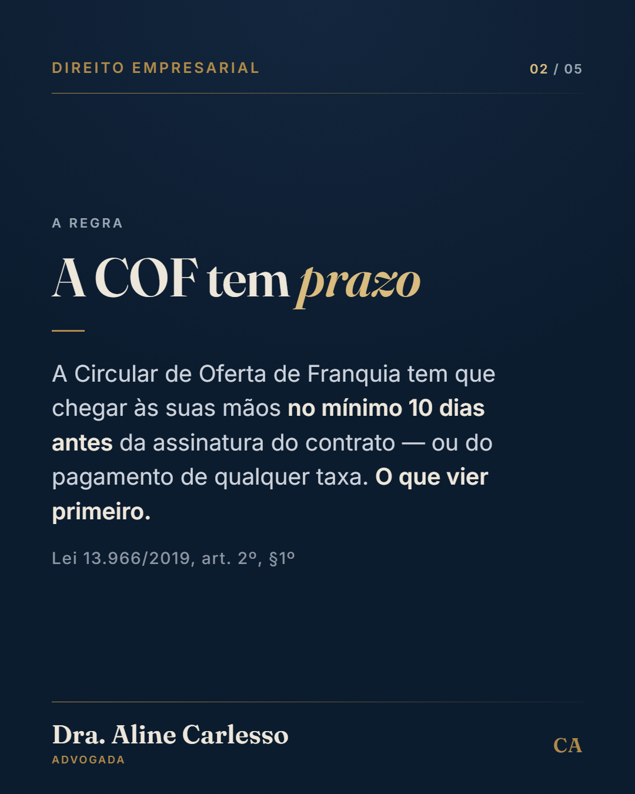

Direito empresarial: o Supremo ainda não decidiu se a contratação PJ vale — e isso não é uma boa notícia para quem contrata. O Tema 1.389 (ARE 1.532.603) teve repercussão geral reconhecida, mas o mérito segue sem julgamento. O que mudou foi o andamento: em 18 de junho de 2026, o ministro Gilmar Mendes liberou parcialmente a suspensão nacional, e os processos que discutem a contratação de autônomos e de pessoas jurídicas voltaram a tramitar na primeira instância e nos Tribunais Regionais do Trabalho. Depois dessa etapa, ficam suspensos de novo até o STF fixar a tese. Na prática, o critério não mudou: contrato de PJ que esconde pessoalidade, habitualidade, subordinação e onerosidade continua podendo ser reconhecido como vínculo, nos termos dos arts. 2º e 3º da CLT. O que mudou é que a fila voltou a andar. Quer revisar como a sua empresa contrata prestadores antes que a discussão chegue nela? Fale comigo pelo WhatsApp no link da bio.
Direito empresarial: o sócio que trabalha na empresa e retira só distribuição de lucros é um dos passivos mais comuns que existem. O sócio que presta serviço à sociedade é segurado obrigatório da Previdência, na categoria de contribuinte individual — art. 12, V, "f", da Lei 8.212/91. E a Receita Federal, na Solução de Consulta Cosit nº 120/2016, firmou o entendimento de que "pelo menos parte dos valores pagos pela sociedade ao sócio que presta serviço à sociedade terá necessariamente natureza jurídica de retribuição pelo trabalho, sujeita à incidência de contribuição previdenciária". O ponto prático é a separação: a empresa precisa discriminar o que é pró-labore e o que é distribuição de lucro. Sem essa discriminação, o Fisco pode tratar o conjunto como remuneração — e a conta volta com contribuição, multa e juros. Vale o registro: é entendimento administrativo da Receita, não texto de lei. Mas é o entendimento que orienta a fiscalização. Quer revisar como a sua empresa remunera os sócios? Fale comigo pelo WhatsApp no link da bio.
Planejamento sucessório: ninguém herda dívida maior do que a herança. O art. 1.792 do Código Civil é direto: "o herdeiro não responde por encargos superiores às forças da herança". E o art. 1.997 completa: a herança responde pelo pagamento das dívidas do falecido, mas, feita a partilha, só respondem os herdeiros, cada qual em proporção da parte que lhe coube. O detalhe que quase ninguém observa está na segunda metade do art. 1.792: a prova do excesso incumbe ao herdeiro — "salvo se houver inventário que a escuse, demonstrando o valor dos bens herdados". Ou seja: sem inventário, é você que precisa provar ao credor que a dívida passa do que recebeu. Com inventário, o valor dos bens já está demonstrado. O inventário deixa de ser só burocracia e vira a sua defesa. Quer entender como organizar isso antes de precisar? Fale comigo pelo WhatsApp no link da bio.

Direito empresarial: antes de assinar uma franquia, existe um documento que a lei obriga o franqueador a entregar — e ele tem prazo. É a Circular de Oferta de Franquia. Pela Lei 13.966/2019, art. 2º, §1º, a COF tem que ser entregue ao candidato a franqueado no mínimo 10 dias antes da assinatura do contrato ou do pré-contrato — ou do pagamento de qualquer taxa ao franqueador, o que ocorrer primeiro. Descumprido esse prazo, o §2º do mesmo artigo autoriza o franqueado a arguir anulabilidade ou nulidade e a exigir a devolução de todas e quaisquer quantias já pagas a título de filiação ou royalties, corrigidas monetariamente. A mesma sanção alcança a COF que omite informação exigida por lei ou veicula informação falsa, sem prejuízo das sanções penais (art. 4º). E o conteúdo obrigatório é extenso: balanços dos dois últimos exercícios, indicação das ações judiciais que questionem o sistema de franquia, e a relação completa de todos os franqueados que se desligaram da rede nos últimos 24 meses. Arraste para ver o que conferir antes de pagar → Quer que a COF seja analisada antes de você assinar? Fale comigo pelo WhatsApp no link da bio.
Direito empresarial: distribuir lucro fora da proporção das cotas é permitido — e a maioria dos contratos sociais não permite. O art. 1.007 do Código Civil diz que o sócio participa dos lucros e das perdas na proporção das respectivas quotas, "salvo estipulação em contrário". É essa estipulação que autoriza a distribuição desproporcional, e ela precisa estar escrita no contrato social. O limite está no art. 1.008: é nula a cláusula que exclua qualquer sócio de participar dos lucros e das perdas. O que mudou em 2026 é o custo. Desde janeiro, o pagamento de lucros e dividendos por uma mesma pessoa jurídica a uma mesma pessoa física em montante superior a R$ 50 mil em um mesmo mês está sujeito à retenção na fonte de 10% de IRPF, vedada qualquer dedução da base de cálculo — Lei 15.270/2025, art. 6º-A. Havendo mais de um pagamento no mesmo mês, o valor retido é recalculado sobre o total. Concentrar a distribuição em um sócio passou a ter uma conta que antes não existia. Quer revisar o contrato social e a política de distribuição da sua empresa? Fale comigo pelo WhatsApp no link da bio.
| Peça | Quando |
|---|---|
| 1 · Pejotização (reel) | ter 01/09 · 20h |
| 2 · Pró-labore do sócio (reel) | qua 02/09 · 20h |
| 3 · Dívida na herança (reel) | qui 03/09 · 20h |
| 4 · Franquia / COF (carrossel) | dom 06/09 · 12h30 |
| 5 · Lucro desproporcional (reel) | ter 08/09 · 20h |
A cadência segue ter/qua/qui/dom. Depois de 08/09 volta a não haver estoque —
o próximo lote precisa ser pautado até lá.
Nada foi agendado. Os crons só entram no VPS depois do seu “ok” —
peça por peça, se preferir.